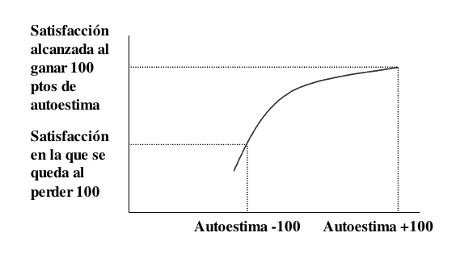
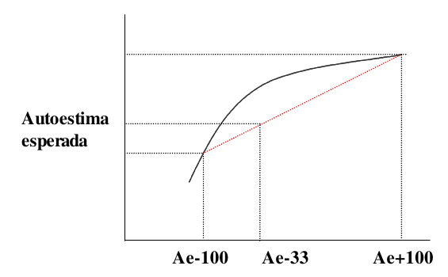
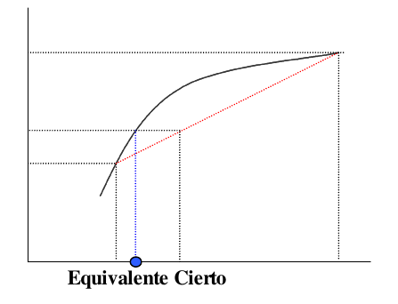

Y es que la vida tiene mucho que ver con la asunción de riesgos. Si volvemos a nuestra fiesta originaria bien podría ser que tras la panorámica sobre la sala, nuestro protagonista se hubiera fijado en una chica y se planteara si presentarse el mismo o no.
La mayor parte de nosotros sufre al acercarse a desconocidos, más aún si los ve como víctimas potenciales de su cortejo. Tenemos miedo al rechazo y de algún modo nos planteamos situaciones así como una lotería en la que premio bien pudiera ser obtener la atención de la otra persona y en la que el “castigo” más o menos probable sería recibir un desaire. Esta claro pues que en este juego, la variable en la que se paga (o cobra) a los jugadores no es otra que la autoestima. Y que el tipo de elección al que se somete nuestro héroe es la que los economistas conocemos como elección bajo condiciones de incertidumbre, modelizada por John von Neumann y Oskar Morgenstern (fotografías de la derecha) en el famoso (y difícil) libro en el que enunciaron por primera vez la Teoría de Juegos [1].
| [1] | “Theory of Games and Economic Behaviour” Princeton University Press 1944 (en biblioteca de la UAM se puede encontrar una tercera edición de 1953) |
John von Neumann / Public Domain
Oskar Morgenstern / Public Domain
En este modelo los individuos asignan probabilidades a las posibles respuestas que pueden encontrar en la persona a la que se presentan. Para simplificar diremos que puede encontrar dos respuestas únicamente: atención o desaire. Y que de algún modo conoce también cuanto le puede doler o alegrar una u otra alternativa o mejor aún, como engordaría su ego a medida que obtuviera atención e interés de la otra parte.
A partir de estos datos podríamos trazar una función de “satisfacción esperada” y jugar con ella. Esta satisfacción esperada sería igual a la suma del efecto sobre el nivel de satisfacción del individuo (lo que los economistas llamamos función de Utilidad) de cada uno de los posibles resultados multiplicados por la probabilidad de que ocurra. Por ejemplo imaginemos que se trata de un individuo que si obtiene la atención de la chica (1/3 de probabilidades a favor) sumará 100 puntos a su índice de autoestima y si no, perderá otros cien. La utilidad esperada de autopresentarse sería:
Note
Por otro lado podemos calcular el “valor esperado” que no es otra cosa que la esperanza matemática de presentarse en términos de autoestima:
Note
Ahora representemos los resultados y las utilidades en ejes. En el de abcisas representaremos su autoestima y los posibles resultados (ganar o perder 100 puntos) En el de ordenadas como queda su índice general de satisfacción (Utilidad) tras cada uno de los posibles sucesos
Note
Ahora uniremos ambos puntos con un segmento y proyectaremos el valor esperado (es decir -33) con lo que obtendremos la Autoestima esperada de presentarse.
Note
Al hacer esto hemos obtenido un nuevo punto de la función de utilidad, si lo proyectamos sobre el eje de abcisas obtenemos un nuevo valor en pesetas, se trata del “equivalente cierto”, esto es, la cantidad de autoestima que el jugador estaría dispuesto a perder con tal de no tener que autopresentarse.
¿Qué quiere decir esto? Si la mayor parte de la Humanidad es como parece aversa al riesgo, es decir tímida en mayor o menor medida, la curva de Utilidad será cóncava en casi todos los casos. Esto es lo que hace que el equivalente cierto sea menor que el valor esperado, es decir que el individuo esté dispuesto a tragarse más ego del que puede esperar perder como media al autopresentarse, con tal de no pasar el mal trago.
Esto parece ser una buena explicación a varios fenómenos constatados empíricamente:
De este último modo, los individuos podrían estar intentando modificar su propia curva de Utilidad. Si la curva fuera convexa, ocurriría lo contrario, y el equivalente cierto estaría a la derecha en el eje de abcisas del valor esperado, es decir se arriesgarían a las calabazas y los desaires con más probabilidad de la que estadísticamente cabría esperar. Ese tipo de comportamientos se llama preferencia por el riesgo en términos económicos y en nuestro caso posiblemente “ser desenvuelto” o “extrovertido”. Finalmente si consiguieran que su función de utilidad fuera rectilínea, coincidirían valor esperado y equivalente cierto y tendríamos un caso de “indiferencia ante el riesgo”, es decir obtendríamos como media los mismos desaires que las probabilidades nos sugieren.
{kind=link}